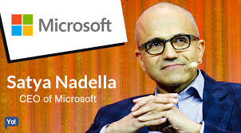

CEO of Microsoft and Inspirational Leader
Satya Nadella was born in Hyderabad, India, in 1967. He earned a degree in Electrical Engineering before moving to the United States for higher education. Nadella joined Microsoft in 1992 and steadily rose through the ranks to become CEO in 2014. Under his leadership, Microsoft has experienced a remarkable transformation in innovation, culture, and global impact.

Born into a Telugu-speaking family in Hyderabad, Satya's early life was shaped by his father's service in the Indian Administrative Service and his mother's academic career. His professional journey began at Sun Microsystems before joining Microsoft in 1992. He played key roles in developing Microsoft’s cloud infrastructure, eventually becoming CEO in 2014 and Chairman in 2021.
Satya Nadella is recognized for his empathetic and inclusive leadership. He champions a growth mindset and continuous learning, encouraging innovation and empowering employees. His focus on collaboration has redefined Microsoft's internal culture and external impact.
"Our industry does not respect tradition — it only respects innovation."
"Be passionate and bold. Always keep learning. You stop doing useful things if you don’t learn."